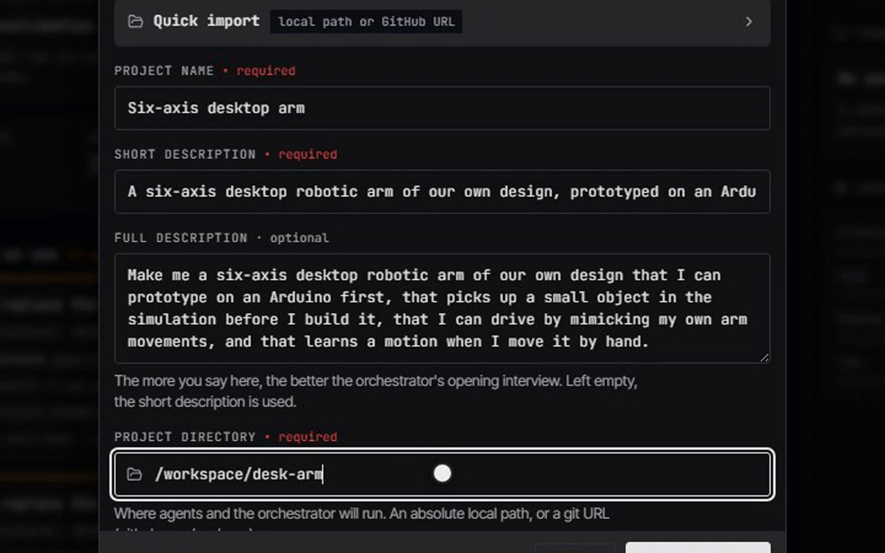

Product · Agents
Every task gets its own agent, in a real terminal.
One master orchestrator, a project manager per project, leads and room stewards, and workers. Claude Code, Codex and other agents run in real terminals; who may start whom is enforced by the channel, not asked of the model.
Every card names a real agent definition under .claude/agents/.
Agents
A spawn, and the team it becomes.
The words “start a project” on one computer, and a plan broken down into a manager, leads and workers, each in its own terminal.

Say what you want built.
Recorded from the app · fixture data ·Recording pendingThe plan, deconstructed into agents
A plan broken down into a manager, leads and workers, each in its own terminal, on the live map.
Being recorded again: the last take stopped on the agent map before the project's team was on screen. It appears here once a new take passes the frame-by-frame check.
Nothing is shown in its place. The slot fills from the showcase manifest once the recording exists, labelled fixture or live with its date.
Agents
Four tiers.
Each agent is a Markdown definition with its own brief and tools. The tier decides what it may start and what it may report.
- Master orchestrator
- Interviews you on a new project and writes the plan; on a returning one it presents the brief. It hands software to the project manager and never writes code. A hardware project is handed to the engineering project manager.
- Project managers
- Own the plan and the tasks for one project. The engineering project manager runs the design method stage by stage, with one room steward per stage, and it is built to start each steward itself. A chain the product ran on its own, from the orchestrator to a worker, is not on record yet.
- Leads and stewards
- 5 domain leads, backend to research, and 19 room stewards for the hardware stages. A lead spawns the workers its stage needs.
- Workers
- 49 worker definitions, each for one job: a route, a test, a printed part, an FEA run. A worker spawns nothing.
Agents
The rule, as code.
The channel reads the caller’s tier from its session and refuses any spawn the table does not allow. A session with no tier is refused by every spawn door.
| The caller | May spawn |
|---|---|
| Master orchestrator | a project manager, or a lead |
| Project manager | a lead |
| Lead or steward | a worker |
| Worker | nothing |
ALLOWED_CHILD_TIER in spawn-authority.ts. Children are started with spawn_agent_pty or spawn_lead; the older spawn_agent is refused for every caller. Reports are tier-checked too, so a worker cannot file a manager’s report.
Agents
Watch the tree while it works.
Sessions draws the org chart as it runs: each node is a session with its state, how long it has run and its model.
One map for every session and sub-agent.
A session is parented by the session that spawned it, so a project manager’s lanes hang under it and a steward’s workers under the steward. Claude Code’s own in-process sub-agents join the same tree from its transcripts.
- Live: heartbeats every 30 seconds; stale after 90.
- Steerable: pause, resume, hand off, restart or end any session.
- Honest: a source that cannot be read is named, and the rest still answer.


Agents
A catalogue of definitions.
Counted from the repository when this page was built.
- 191agent definitions in 23 folders
- 5domain leads
- 19room stewards
- 49worker definitions for the hardware rooms
Agents
Bring the agents you already use.
Each coding agent is a row in one harness table that states how far it has been verified. A row is a claim, and each row carries the evidence for its level; a flag nobody could verify is named as unverified, not written down as true.
Every harness, and how far it is proven.
Theioma spawns the agent into a real terminal and wires it to the team, with its session config written by the spawn route.


| Agent | Verified | What it does under Theioma |
|---|---|---|
| Claude Code | Ran under a steward | The canonical agent: a real terminal, both MCP servers, its session config written by the spawn route. |
| OpenAI Codex CLI | Ran under a steward | Runs sandboxed, with its MCP servers passed as command-line overrides. It has run once under a steward, on 24 Sep 2026, with no hardware-tool call under it. |
| OpenClaw | Passed a probe | Runs through the harness in its own terminal. |
| Any agent behind HTTP | Passed a probe | Any agent that speaks HTTP. |
| opencode | Not verified yet | Reads a session-private config; only that first stage has been checked. |
| Cursor agent CLI | Ran under a steward | Spawned through the spawn route; it acknowledges its brief and calls the Channel and hardware tools. |
| Gemini CLI | Not verified yet | A row for Gemini CLI in its own terminal. It was not installed where the row was written, so nothing has run it. |
| Aider | Not verified yet | A row for Aider in its own terminal. It was not installed where the row was written, so nothing has run it. |
The rows are the harness registry in providers.ts, read when this page was built.
Agents
Models from anywhere you already pay for, or nowhere.
The model gateway hands each session its own token and never proxies a subscription.
- Subscriptions
- Claude and Codex sessions run on your own logins, never through a shared key.
- API providers
- Through the gateway, including families that speak only the OpenAI Chat API, translated both ways.
- Local
- Ollama serving gemma4:12b for the local tier, found when the app starts.
- Limits
- At a usage limit a turn moves to another member serving the same model, never to another family. Tested; a live continuation has not run yet.
Agents
A catalogue that never promotes itself.
The model catalogue holds facts from OpenRouter’s public list, a transcribed DeepSeek table and your local Ollama.
A refresh never makes a model routable: a reviewed list says which model may be a candidate on which harness. A price not served is null, never zero. A model that disappears is marked retired and kept, never deleted.
Agents
A heartbeat every 30 seconds. Silence has a meaning.
Every session reports on a clock. Every page reads the same three thresholds, so no screen calls a silent agent alive and no two screens disagree about it.
From session-liveness/constants.ts: three missed 30-second beats is 90 seconds.
Agents
Jobs on a clock you can see.
53 registration paths put jobs on the clock: 41 registered directly and 12 behind a setting.
Every job, and when it last ran.
The Cron page lists each job with its schedule and its last run. The route that lists them registers the baseline jobs first, so the list and the scheduler cannot disagree.
- Nightly consolidation waits for 30 minutes of quiet before it starts.
- A drift gate asks you before a change above 30 percent.
- Stale sessions are demoted by the same thresholds the pages read.


Agents
Built so full context windows and usage limits do not stop the work.
Near its context limit an agent writes a handoff and a fresh agent continues from it. When a subscription or provider hits a limit, the turn moves to another member serving the same model, or it is not delivered. Both paths are tested; neither has passed a live drill yet.
The handoff route is session-rotator.ts; a fresh agent reads PROGRESS.md and the receipts and never resumes the old transcript. A turn is never switched to another model family.